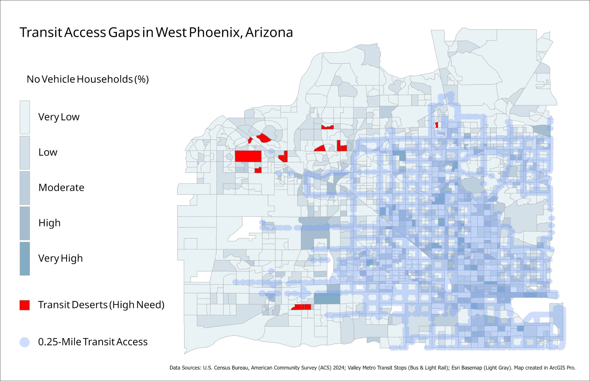

Transportation GIS
Transit Access Gaps
West Phoenix, Arizona
This project identifies areas where households without vehicles may have limited access to nearby transit stops. The map combines no-vehicle household data with transit stop proximity to highlight high-need areas.

Project Goal
The goal of this project was to examine transportation access for households that may depend more heavily on public transit. By comparing no-vehicle household percentages with nearby transit access, the project highlights areas where limited transit coverage may create mobility challenges.
GIS Methods
- Mapped no-vehicle household percentages by census geography.
- Created a 0.25-mile access buffer around transit stops.
- Used spatial analysis to compare household need with transit proximity.
- Identified high-need areas outside nearby transit access.
- Symbolized transit access, no-vehicle rates, and gap areas in one layout.
- Designed a final map layout in ArcGIS Pro.
Data Sources
- U.S. Census Bureau, American Community Survey 2024
- Valley Metro Transit Stops
- Esri Light Gray Basemap
Skills Demonstrated
Key Takeaway
Transit access is not only about where bus stops exist, but where they exist in relation to households that are more likely to rely on them. This project shows how GIS can be used to identify mobility gaps and support transportation planning decisions.
Limitations
This project uses distance to transit stops as a basic access measure. It does not include service frequency, route quality, sidewalk conditions, travel time, shade, safety, or rider experience, which would make the analysis stronger in a future version.